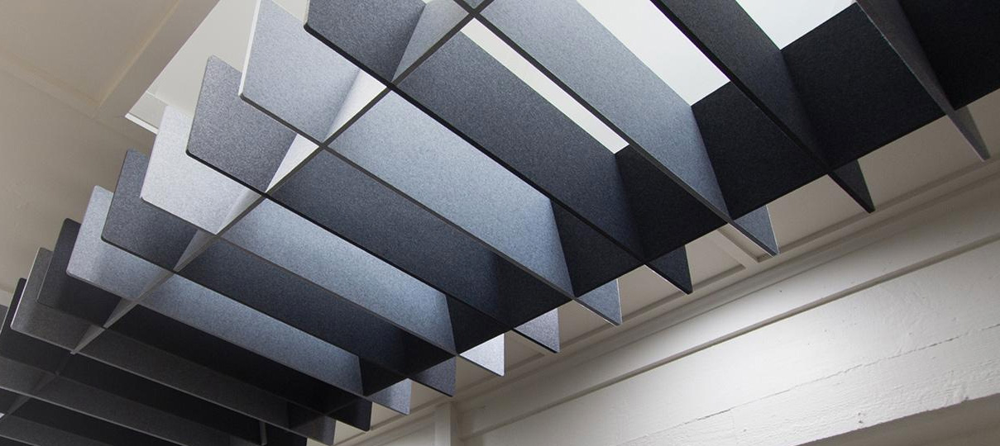

Las autoridades de todo el mundo han impuesto restricciones estrictas con respecto a los niveles de ruido en el puesto de trabajo. Se deben tomar medidas para reducir el ruido al nivel más bajo posible.
Entre otras cosas, nuestro programa de control de ruido debe ponerse en marcha si los niveles de ruido exceden los límites existentes. El personal no debe estar expuesto a ruidos que puedan dañar su audición. Los empleados que sospechen que los niveles de ruido en su puesto de trabajo son demasiado elevados deberían dirigirse a sus superiores para obtener ayuda.
La normativa en materia de ruido indica respecto al valor inicial inferior que, si el nivel diario de exposición al ruido durante una jornada laboral es superior a 80 dB o el valor de parada de impulso es superior a 135 dB, se deberá informar a los empleados sobre los riesgos de la exposición al ruido, los valores inicial y límite, el resultado de las mediciones del ruido y las medidas que se adoptan.
El valor inicial superior y el valor límite del nivel diario de exposición al ruido es de 85 dB, el nivel de presión acústica ponderado A máximo es de 115 dB y el valor de impulso de parada de 135 dB. Si se alcanza o sobrepasa el valor inicial superior se exige la realización de medidas para reducir la exposición. Las medidas que no se realicen inmediatamente se inscribirán en un plan de acción escrito. El nivel de ruido equivalente, por ejemplo el nivel medio de un día de trabajo no debe superar los 85 dB(A). Ninguna fuente de ruido continuo puede exceder los 115 dB(A) y ningún ruido de impulsos no puede ser mayor de 140 dB(C).
El ruido en el puesto de trabajo debe medirse siempre que exista un riesgo demasiado elevado, por ejemplo cuando se excedan las limitaciones de ruido estipuladas. Los resultados deben registrarse y archivarse. La medición y esquematización del ruido también es necesaria cuando se lleva a cabo un programa de control de ruido.
Las máquinas deben diseñarse para generar el menor ruido posible. Al comprar una nueva máquina, utillaje, o cualquier otro equipo, es importante elegir las alternativas más silenciosas que existan.
La maquinaria y los equipos deben llevar un mantenimiento para evitar que con el paso del tiempo, se vuelvan ruidosas. Los lugares de trabajo deben estar diseñados acústicamente para absorber el ruido y mantenerlo en un mínimo absoluto.
Siempre que los niveles de ruido puedan dañar la audición, deben colocarse señales que adviertan “riesgo de daños auditivos – utilizar protección acústica”. Estas advertencias deben ser visibles al entrar en la zona, así como en las mismas máquinas. Debe advertirse a los empleados de que se están excediendo los límites de ruido y se les debe informar de las medidas que la empresa está llevando a cabo.
También se les debe pedir que lleven protección. Esta protección debe ser la adecuada a las condiciones ambientales y se debe elegir conjuntamente con los empleados. Todo personal que esté expuesto a un nivel de ruido que exceda las limitaciones existentes debe pasar pruebas regulares de audición y estar informado de los resultados.
En la actualidad, las autoridades de la mayoría de los países exigen soluciones para reducir el ruido al que los empleados están expuestos, siempre que se excedan las limitaciones estipuladas. Un programa de control de ruido es una clara descripción de las medidas que se deben tomar para reducir el ruido a un nivel que no sea perjudicial para la audición.
El programa debe también incluir unas fechas para la mejora y especificar quien es el responsable de que se cumplan las diversas medidas tomadas de acuerdo con él. La amplitud, diseño y fechas para el programa de control pueden variar dependiendo del tamaño de la empresa.
+ Protección de los trabajadores contra los riesgos derivados a la exposición del ruido.
+ Evaluación y propuesta de SOLUCIONES INTEGRALES.
+ Medidas Acustica para el cumplimiento de la normativa ISO 14001.
+ Control Industrial y estudios de reducción general de ruido.
+ Cálculos de reducción de Ruido.
+ Asesoría a técnicos en seguridad e higiene.
+ Optimización del costo de la soluciones (Realización o implementación de soluciones reales en base a cálculos y mediciones).
A menudo se presenta la necesidad de realizar medidas de corrección Acustica en fábricas con grandes problemas de ruido.
El principal objetivo es conocer de forma precisa si se trata de un problema general (de toda la nave) o local (de una zona o un concreto de maquina o proceso).
La solución consiste en realizar un mapa de ruido que presente la distribución de ruido en forma de zonas coloreadas lo cual otorgara una clara idea y concisa del problema.
Una vez definidos los problemas nuestro grupo de ingenieros con la ayuda de nuestro cliente comenzaremos a definir soluciones reales al problema de ruido, (silenciadores neumáticos, boquillas, mufflers, bafles acústicos, tratamientos acústicos, barreras acústicas, división de zonas, soportes elásticos, cabinas acústicas, materiales absorbentes o aislantes, etc.) puede recalcularse el nuevo mapa para tener el resultado acústico futuro y los niveles de ruido que se obtendrían antes de realizar las soluciones propuestas.
Realizaremos un modelo digital a escala 3D en computadora.
Obtención de los niveles de emisión sonora de las fuentes de ruido existentes (mediante mediciones de ruido “IN SITU” durante 2 semanas completas.
Aplicación al modelo de las características geométricas y de absorción Acustica del entorno.
Caracterización de cualquier parámetro vertical u horizontal de cierre de instalación con los índices de reducción sonora.
Obtención de la potencia Acustica de las fuentes a partir de los datos del fabricante, (Obligatorio) y partir de la medida de los niveles de presión sonora medidos.
Generación del mapa de ruido en estado actual.
Toma de decisiones y posibles soluciones con una base real: Cualquier variación de la instalación, modificación del entorno, sustitución o modificación de las fuentes de ruido, con o sin tratamiento de insonorización, puede ser perfectamente simulada por nuestro modelo, pudiéndose extraer a “priori” una previsión de los resultados esperados.
Comenzaremos midiendo el ruido al que está expuesto cada empleado en particular. El nivel de ruido general debe medirse también pero recordemos que es importante que la medición la realizaremos en condiciones de trabajo representativas. Compararemos los resultados con las limitaciones estipuladas en las normativas de exposición al ruido.
También debemos revisar el historial auditivo del personal. (Solo en caso de que exista algún historial)
La acústica en el lugar de trabajo tiene un gran efecto en los niveles de ruido al que están expuestos los empleados. El ruido normalmente se amplifica dependiendo de la reflexión en las paredes, techo y suelo. Las características de absorción del sonido de estas superficies determinan hasta qué punto se refleja el ruido. Sus propiedades dentro de la nave o recinto las mediremos y las calcularemos.
Después de realizar, interpretar y presenta el MAPA DE RUIDO y evaluar la acústica del lugar de trabajo por parte de Acustica Integral, es hora de proponer soluciones reales. Es importante que se les permita a los empleados y encargados de la seguridad realizar sugerencias y expresar sus puntos de vista ya que el nivel de atenuación acústica depende mucho también de la meta prevista por el cliente. Normalmente se requiere una combinación de soluciones. Como por ejemplo:
Una vez que se hayan escogido los pasos a seguir o soluciones decididas en conjunto de Acustica Integral y el cliente, se hará una presentación formal del costo total de las soluciones decididas a llevar a cabo.
Cuando el ruido se ha esquematizado y se ha terminado el MAPA DE RUIDO y se han decidido las soluciones a aplicar, debe organizarse un programa de control de ruido para su cumplimiento. Es importante que alguien se haga responsable para cerciorarse de que se llevan a cabo las medidas apropiadas y de que se fije un plazo para su cumplimiento y comenzar con la implementación de la soluciones dentro las instalaciones del cliente.